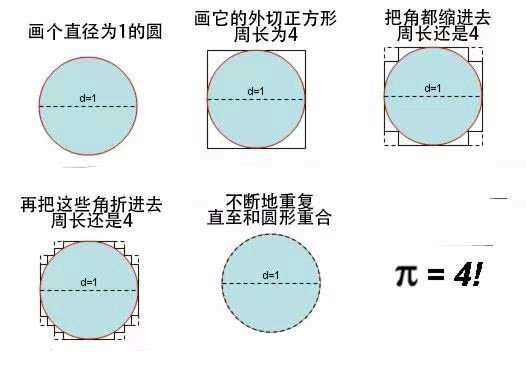
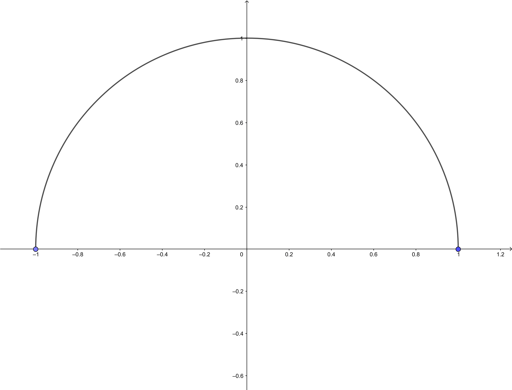

π 为什么会等于四

我是在差不多三年前看到过这张图的. 曾经对极限完全不了解的我, 简单的认为由于边长一直不变, 所以不能这么算. 前几天有个同学的问题突然又激发了我对这个问题的思考, 突然意识到了之前的我对这个问题理解的浅显, 弄明白了这样论证的问题所在以及它为什么看起来如此正确.
为什么是错误的?
首先, 我们自然知道 $\pi=3.1415926\cdots$ , 而上面的论证中不断的重复折叠所得到的周长, 最终都不会收敛于圆的周长 (一直等于 $4$) . 但是这里就会有人疑惑了: 为什么最终得到的 $4$ 不是圆的周长呢? 明明折到最后就是个圆呀? 而这, 其实源于我们对图中表述 不断的重复 和 一个图形怎样才是圆形 的理解的混乱所致.
什么是不断的重复?
在数学中, 有一个对应的概念, 即为极限. 重复次数设为 $n$ , 然后 $\lim n\to\infty$ 就可以认为是不断的重复了.
一个图形怎样才是圆形?
为了方便表述, 我们只考虑一个单位半圆 (半径为 $1$) 的圆弧

通过适当的建系, 可以通过一个函数来描述它, 我们用 $f(x)$ 来表示这个半圆. 现在, 我们列出两个关于判定某个图形 (该图形可以用函数表达, 该函数设为 $g(x)$) 是不是该半圆的两个指标:
- $g(x) = f(x)$
- 函数曲线的长度为 $\pi$ (即等于该半圆长度)
可以看到, 指标 1 其实是一个充要条件, 而指标 2 只是一个必要条件, 不过这足以用来解释矛盾的产生了. 我们将第 $n$ 次折叠后的正方形的函数设为 $g_n(x)$ , 结合起对 不断的重复 的理解 (求极限) , 我们来分析一下两种观点:
不断的重复后正方形最终折叠成一个半圆
事实上这种想法用数学语言解释其实就是认为, 不断重复后的正方形的表达其实是 (此时正方形必须斜放, 不然不会有函数表达式, 但是这只是为了方便, 并不影响最终结果)
$$
\lim_{n\to\infty} g_n(x)
$$
并且有
$$
\lim_{n\to\infty} g_n(x)=f(x)
$$
按照指标 1 自然可以认为最终就是得到一个半圆.不断的重复后最终并不是半圆
我们让 $l(g_n(x))$ 表示 $g_n(x)$ 函数曲线的长度 . 那么有
$$
\lim_{n\to\infty}l(g_n(x))=4\not-\pi
$$
根据指标 1 就可以认为最终其实不是圆.
因此不同的答案的原因在于指标选取不同.
那为什么不能证明 π = 4 ?
通过上述解释, 可能有的人仍然疑惑: 明明按照指标 1 自然可以认为最终就是得到一个半圆, 那为什么最终 $\pi\not=4$ ? 这种想法产生的原因其实就是对极限运算的顺序的随意调换导致的. 可以用一个不等式来表示
$$
\lim_{x\to\infty}l(g_n(x))\not=l(\lim_{x\to\infty}g_n(x))
$$
以第一种观点来计算, 最终算得折叠后的图形的长度为 $\lim_{x\to\infty}l(g_n(x))=\pi$ , 而以第二种观点来计算, 最终得到的长度为 $l(\lim_{x\to\infty}g_n(x))=4$ . 用人话说就是: 第一种观点下最终图形是半圆, 周长是 $\pi$ , 第二种观点下最终图形不是半圆, 周长自然就不是 $\pi$ 而是 $4$ . 而有人将这两个情况混在一起, 以第一种观点来讨论最终的图形是不是圆, 然后却以第二种观点来计算这个图形的长度, 自然就会产生谬误, 这也是这个论证极具有迷惑性的原因. 并且, 由于人们通常认为数学问题只会有一个答案, 因此会自然 (不自觉) 的把两种解释结合起来. 当然 (严谨的) 数学问题只会有一个答案, 但是用自然语言描述的数学问题, 由于其不够严谨, 因此才会产生不同的解答 (特别是谈到极限这类问题时).